Шаг 1
Тест «Что мешает вам чувствовать себя лучше?»
Тест занимает 1–3 минуты. В конце человек сразу видит свой результат и темы, на которые стоит обратить внимание. Для эксперта это готовый повод начать разговор.
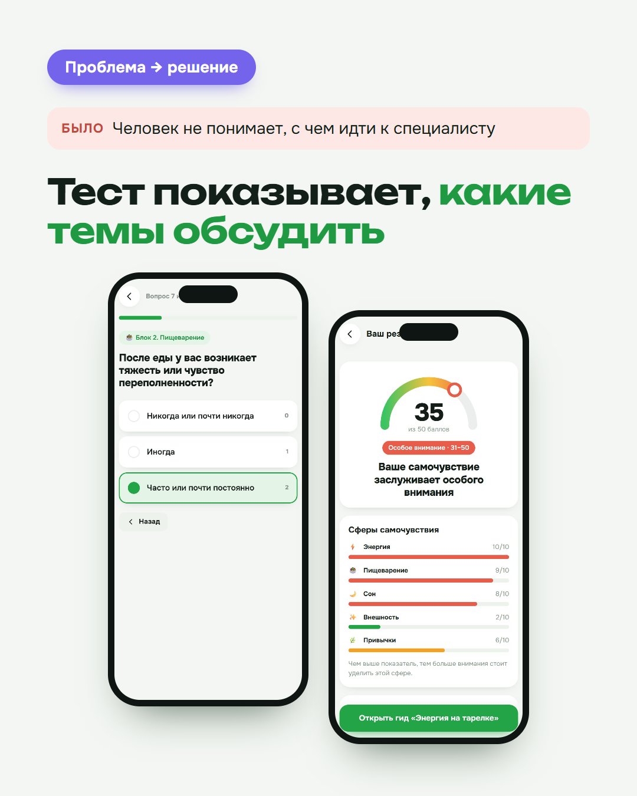
Тест, подарок, напоминания, бонусы и витрина курсов собраны в одном месте. Клиент открывает приложение прямо в Телеграме, без скачивания.
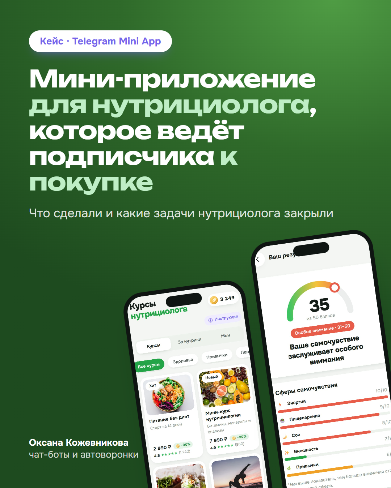
У нутрициолога есть канал и аудитория, а продажи держатся на личной переписке. Человек читает посты и не делает следующий шаг. Бесплатный PDF скачивают и забывают. Напоминать каждому вручную долго, а «пишите в директ» отпугивает тех, кто ещё не готов.
Клиенту было нужно:
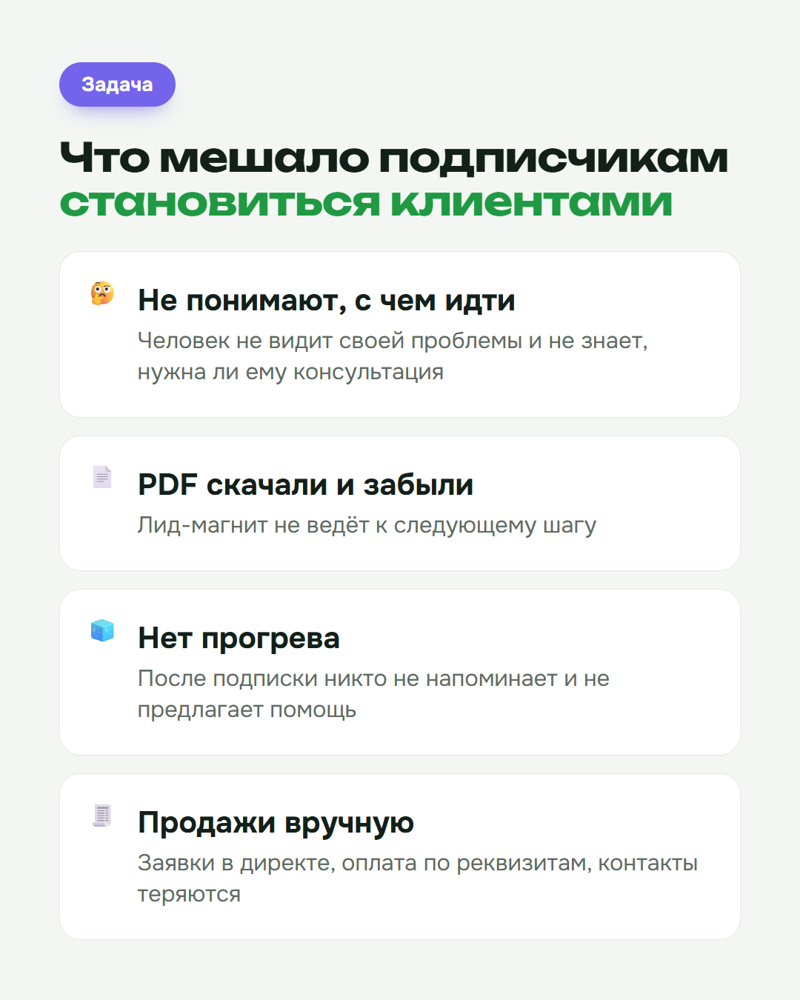
Я сделала приложение, которое открывается из канала, профиля или рекламы в одно касание. Короткие приветственные слайды сразу объясняют, что внутри и зачем. Дальше клиент проходит путь сам, а эксперт подключается, когда человек уже готов купить.
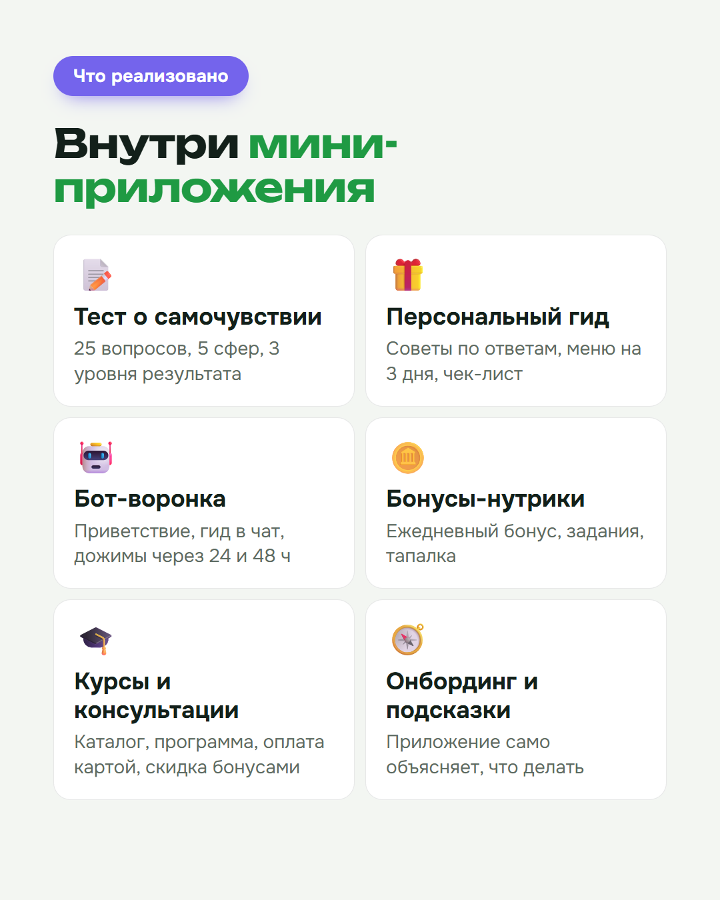
Тест занимает 1–3 минуты. В конце человек сразу видит свой результат и темы, на которые стоит обратить внимание. Для эксперта это готовый повод начать разговор.

Персональный гид: шаги, меню на 3 дня и чек-лист. Это советы под результат конкретного человека, поэтому к гиду возвращаются, а не забывают его в загрузках.
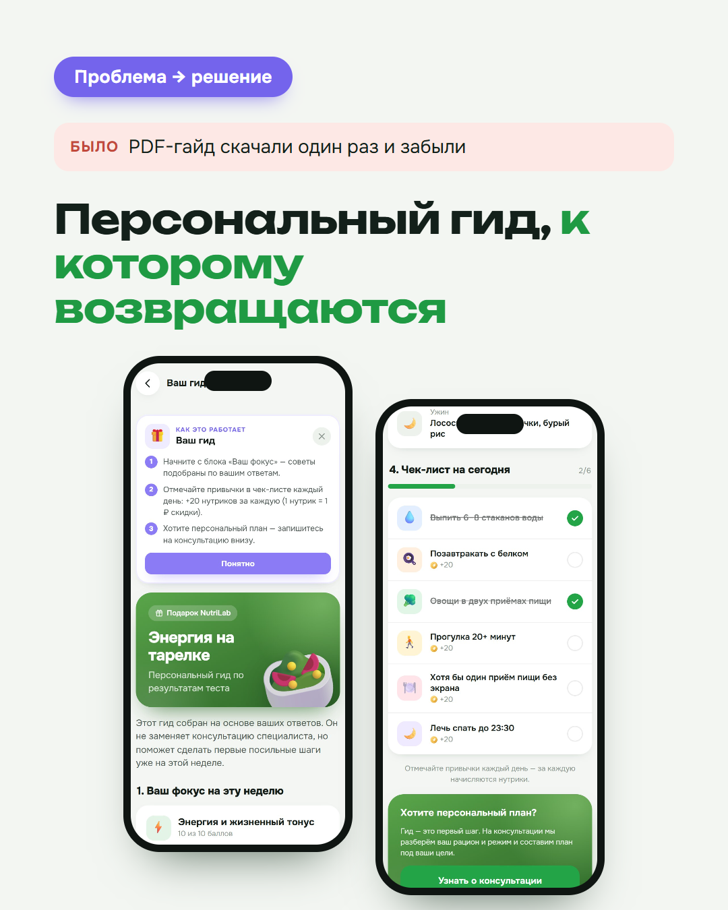
Через 24 и 48 часов бот сам пишет клиенту и возвращает его в приложение. Каждый день клиент получает бонус, выполняет простые задания и играет в мини-игру. За это он копит баллы: 1 балл = 1 ₽, ими можно оплатить до 30% стоимости курса. Ещё есть бонус за приглашённого друга.
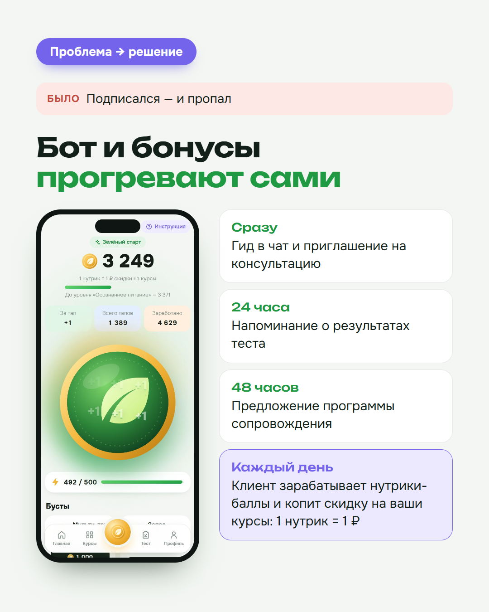
В каталоге курсы, консультация эксперта и разбор рациона куратором. Полезные материалы можно получить только за баллы. Покупка оформляется не выходя из Телеграма. Для вопросов есть кнопка связи с менеджером.
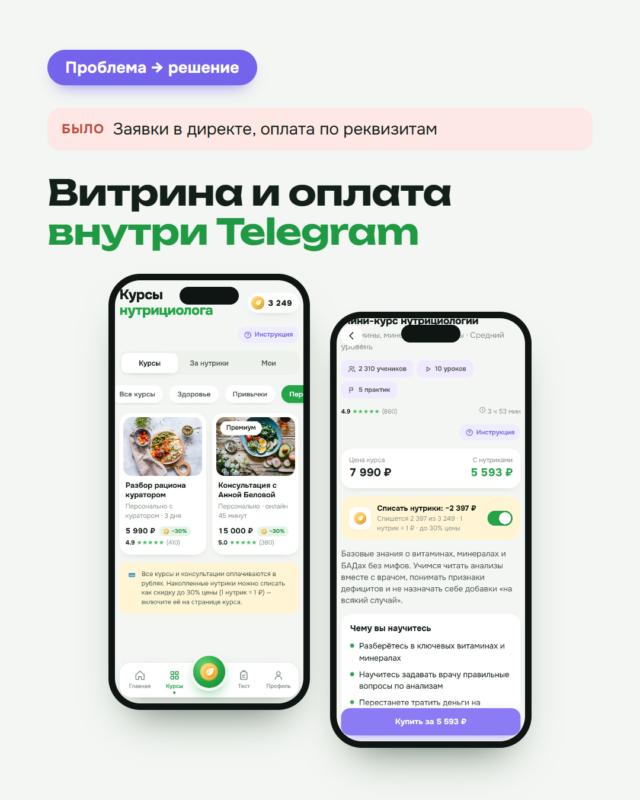
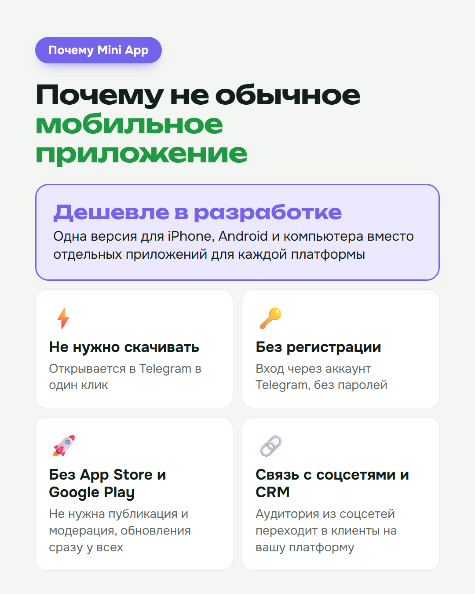
У нутрициолога появился собственный инструмент вместо PDF, как у всех.
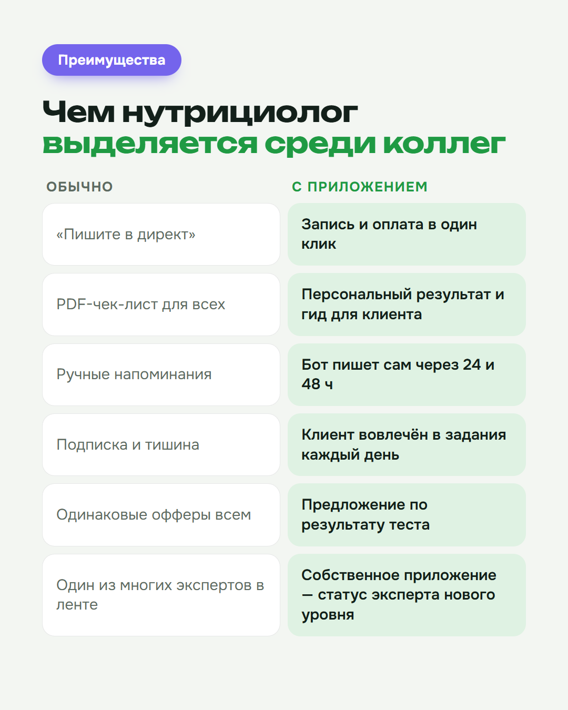
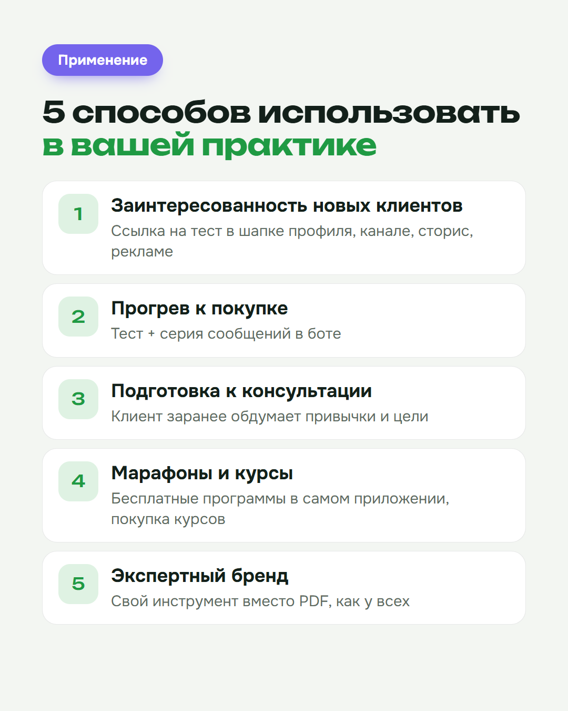
Что входит: дизайн, тест и подарок по вашим материалам, бонусная система, витрина курсов, автоматические сообщения, настройка бота и запуск.
Откройте демо и пройдите путь клиента сами. Потом напишите мне, обсудим вашу версию.
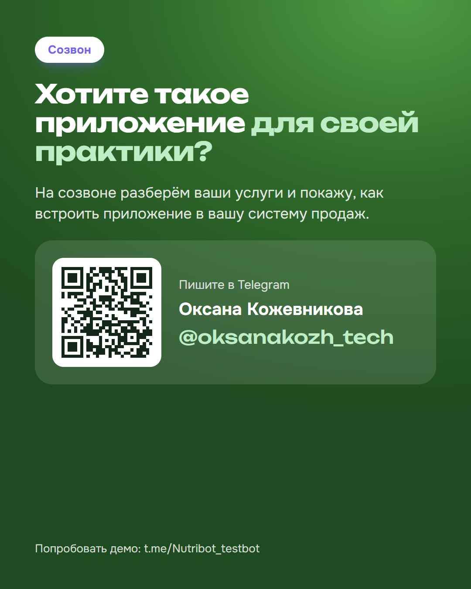